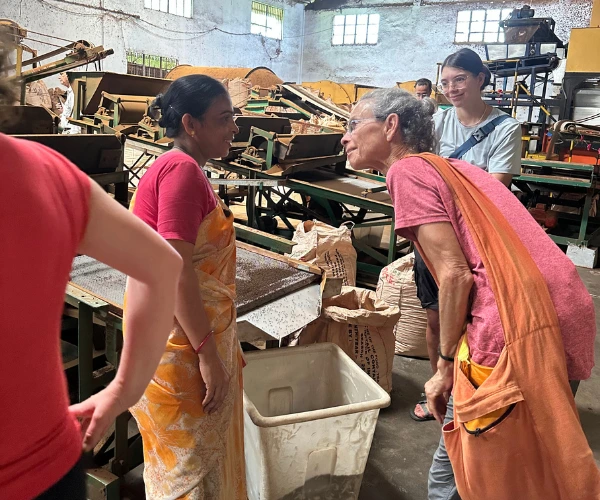

Overview
An unhurried journey through the cultures of the Brahmaputra Valley
People of the Brahmaputra Valley follows the river eastward through Assam and into Arunachal Pradesh, tracing the communities, food traditions, craft, faiths and village life shaped by this vast valley.
The journey begins in Guwahati and moves through river country, tea landscapes, satras, markets, tribal villages and frontier settlements before ending at Dibrugarh.
It is designed for travellers who want a compact but meaningful introduction to the cultural range of the Brahmaputra Valley.
Tour Details
Route character

Journey Flow
The tour in sections
This is an indicative flow. The final route is shaped around your dates, local access, festivals, village stays and group pace.
Lower Brahmaputra Valley
Begin in Guwahati and follow the Brahmaputra east, moving through riverine settlements, markets and cultural sites that introduce the scale and diversity of the valley.
Central Assam
Spend time with tea landscapes, village roads, craft traditions, local kitchens and the changing cultures of the central valley.
Upper Assam
Continue into older tea country and historic Upper Assam, where Tai-Ahom, Assamese, Mishing and river island cultures shape the route.
Eastern Arunachal Pradesh
End near the frontier, where the Brahmaputra’s eastern tributaries, forested foothills and Arunachal communities bring a different rhythm to the journey.
Detailed itinerary
Ask for the full route plan and cost
The itineraries are unique, so the detailed route and cost are shared directly after understanding your dates, pace and group size.
Photo Gallery
People, river and valley
Enquire
Plan People of the Brahmaputra Valley
Share a few details and we will get back to you with the best route, duration and cost options.